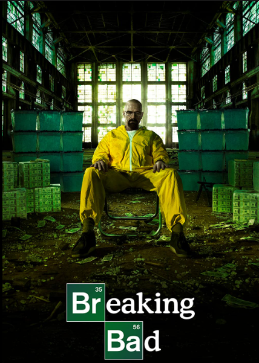
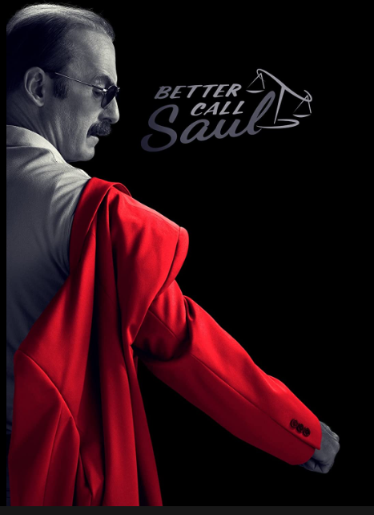
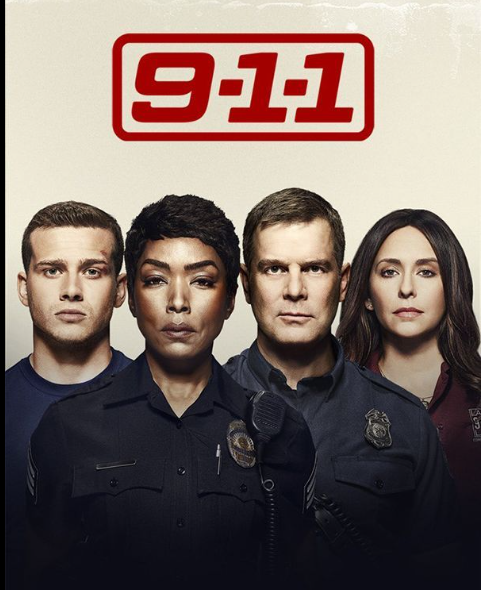

The Best Shows According to Brandon
My top 3 Shows of all-time.
-
Breaking Bad-
-
This is my favourite show because of the jaw dropping writing and
the
perfect character developent. This show is defenitly a must watch
for
everyone

-
Better Call saul-
-
Similar to Breaking bad This show does not miss on any of the good
elements that make a great show. As its in the same universe as
breaking bad better call saul makes numerous references to breaking
bad.

-
9-1-1
-
Taking a break from the breaking bad universe this show takes place
in
our own universe. This show revolves around some well writen
characers
that are all some type of law enforcment. They usually respond the
the
crayziest emergancies in the L.A. region.
